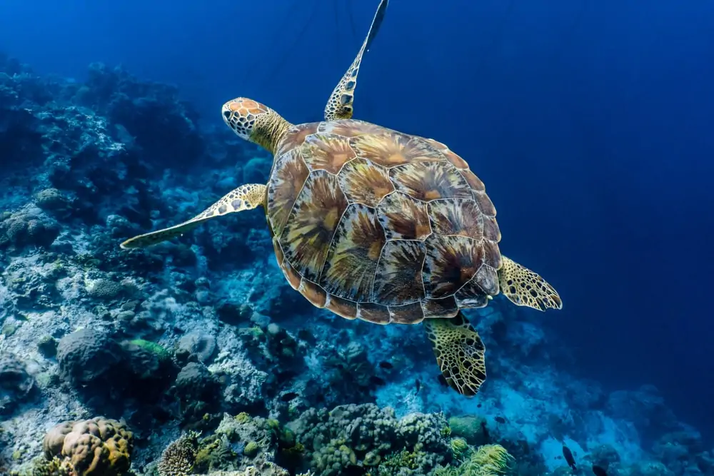
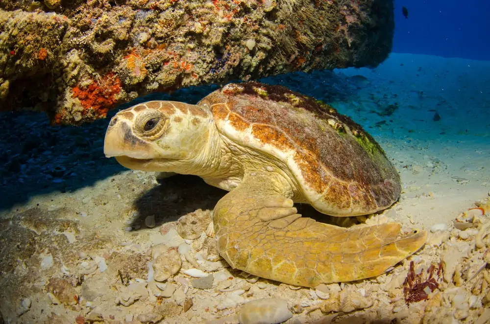
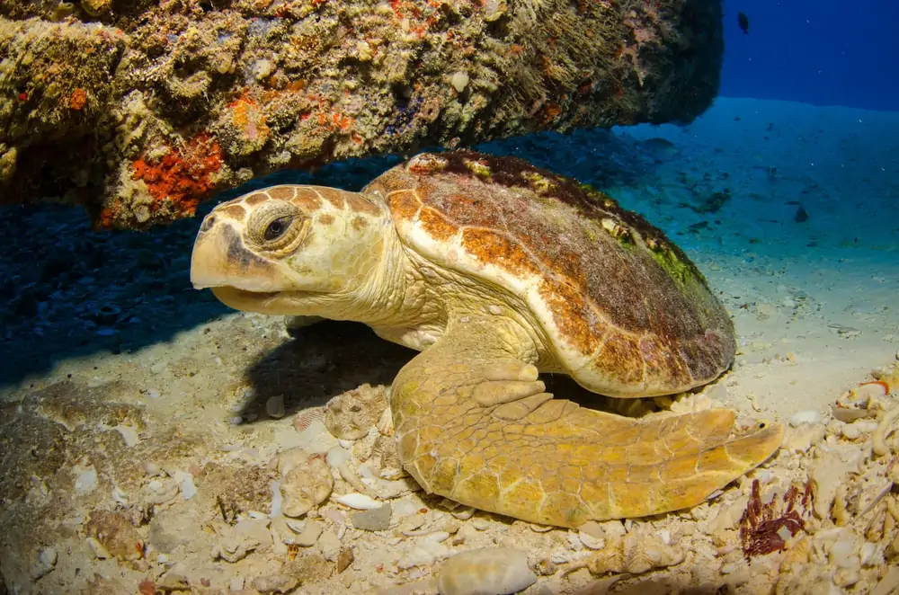
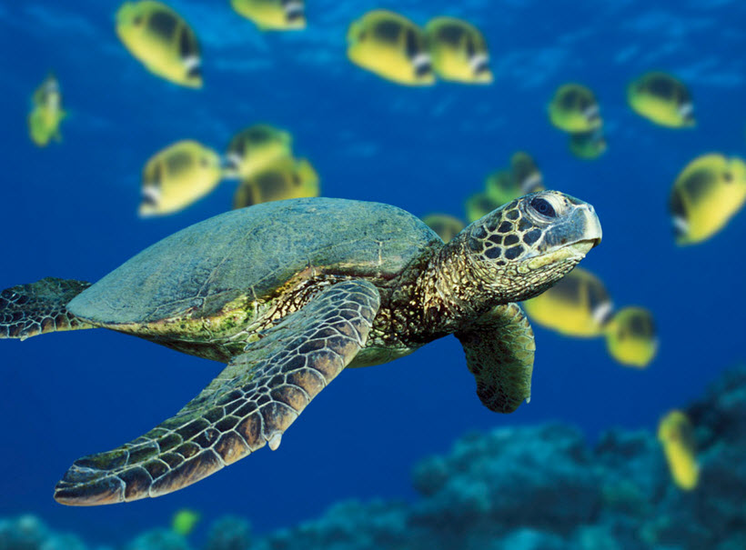
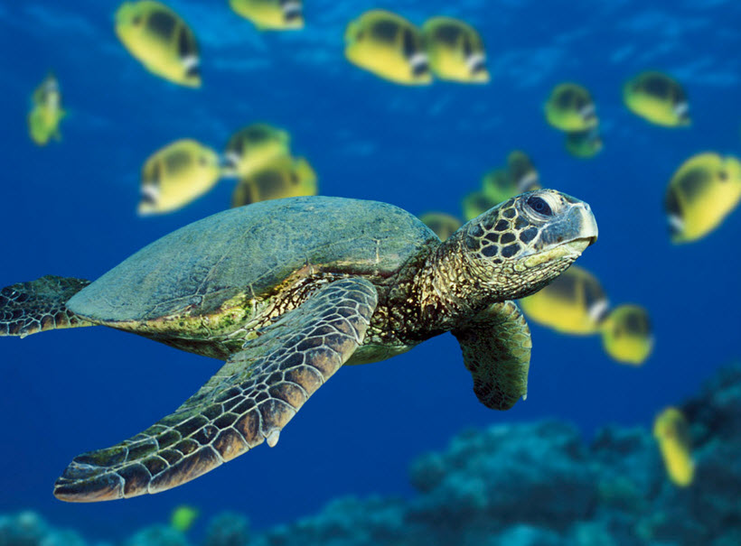
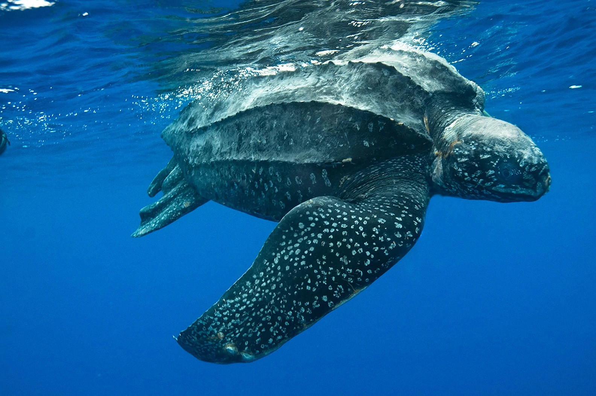
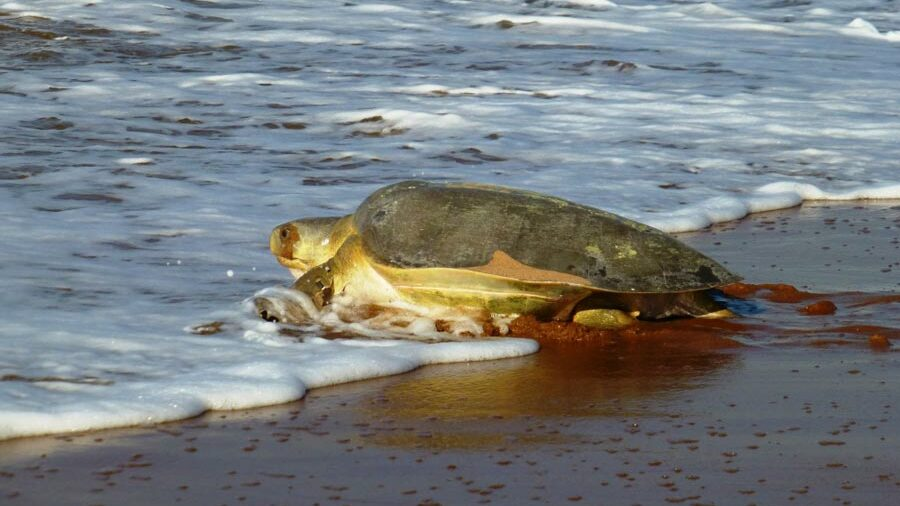

El planeta tierra está compuesto en su mayoría por agua, por lo que no es sorpresa que los océanos sean ecosistemas prósperos y compuestos donde interactúan miles de especies en armonía. Entre esta amplia variedad de organismos se encuentran las tortugas marinas, animales que han poblado el mundo desde hace cientos de años. Estas criaturas han recorrido los mares desde hace más de 100 millones de años, y son animales acuáticos que desempeñan un papel importante en el equilibrio de los ecosistemas marinos, pues ayudan a la salud de los arrecifes de coral y pastos marinos, lo que directamente ayuda a mantener el control de especies invasivas. Actualmente por factores —directos e indirectos— como la contaminación de los océanos con plásticos, la pérdida de su hábitat por la industrialización, el cambio climático, el saqueo de sus nidos y la caza de ejemplares adultos por su carne, piel o caparazón —entre otras variables que pueden depender de la especie y su distribución— es que 6 de las 7 especies están amenazadas. En este artículo hablaremos sobre las distintas especies que existen de tortuga marina, sus características como alimentación, reproducción, distribución en el territorio mexicano y —sobre todo— las acciones que toma el país para su manejo y protección.

Comúnmente se le conoce como tortuga verde del Atlántico o tortuga blanca. El nombre de tortuga verde se debe a que la grasa debajo de su caparazón es de este color.
Entre sus características se encuentra que habitan aguas tropicales y subtropicales, llegando a playas de anidación en las islas del Caribe, Costa Rica, México e India, entre otros.
Las crías son de color negro con los bordes de su cuerpo en blanco, pero al alcanzar la edad adulta se pueden encontrar de diferentes colores —dependiendo de la población—, desde el blanco jaspeado al negro en el caparazón, con las extremidades de color olivo y el plastrón de un tono gris azulado.
La tortuga verde adulta es herbívora, consumiendo principalmente pasto marino y algas; sin embargo, al inicio de su vida y hasta su etapa joven es omnívora, consumiendo también medusas, cangrejos, pequeños peces y moluscos.
Una de las particularidades de esta especie es que algunos autores consideran que en realidad se trata de 2 subespecies, la chelonia agassizii —que se conoce como tortuga negra, prieta o parlama— que se encuentra en el Pacifico Oriental, mientras que la otra es Chelonia mydas —tortuga verde o blanca— y se distribuyen en el resto el Atlántico y Mediterráneo.
Conocida como tortuga carey o hawksbill sea turtle —nombre común en inglés— dada la apariencia de su mandíbula superior, similar al pico de un halcón. Su mandíbula le permite extraer su comida de grietas de arrecifes de coral, la cual se compone de esponjas, camarones y anémonas.
Es considerada la especie más tropical entre todas las tortugas marinas, encontrándose en aguas tropicales y subtropicales. Por otra parte —desafortunadamente—, también es una de las especies más amenazadas en el mundo, siendo clasificada como especie en peligro crítico de extinción por la UICN.
Entre sus características principales está su caparazón con un diseño de rayos en colores amarillo, negro, canela y marrón en cada escudo. Sin embargo, es este mismo caparazón el que las convierte en un objetivo de los cazadores, pues se utiliza para elaborar artesanías.
 

Se le llama “cabezona” o caguama gracias a una de sus características más distinguible: su cabeza grande y triangular en comparación con la de otras especies, alcanzando alrededor de 25 cm. Otro de sus nombres comunes es la tortuga amarilla, debido a su coloración.
En cuanto a su tamaño, la longitud promedio de un adulto de esta especie se encuentra entre 70 a 95 cm, mientras que el rango de peso medio es de 80 a 200 kg. Actualmente este reptil se encuentra en la categoría de peligro de extinción, dentro de la lista de UICN.
Se considera que esta especie es carnívora ya que se alimenta de esponjas, moluscos, medusas y otros invertebrados. Está distribuida alrededor del mundo, abarcando el mar Mediterraneo y el océano Pacífico, Índico y Atlántico.
Esta especie es la más pequeña entre todas las tortugas marinas, con un tamaño de 60 a 70 cm y un peso que no suele superar los 40 kg. Estas tortugas marinas se encuentran en la mayoría de los mares tropicales del mundo, con afluencia en el Pacífico oriental, y con la excepción del Atlántico norte.
También es llamada tortuga olivácea, esto por su caparazón de color verde oliva oscuro, con la superficie inferior de color amarillo.
Su alimentación es omnívora e incluye camarones, pescados, langostas de roca, cangrejos y pequeños invertebrados. Se considera en un estado vulnerable por la UICN.
 

Esta tortuga marina es llamada lora o cotorra por la forma de su pico, pero su otro nombre común es tortuga bastarda. Se encuentra entre las más pequeñas de las tortugas marinas, pues en la edad adulta llega a medir entre 60 a 90 cm y pesar hasta 45 kg.
Su alimentación consiste de moluscos, crustáceos, medusas, algas y erizos de mar. Y un distintivo de ella es su caparazón de forma casi circular. Se considera en Peligro Crítico de Extinción por la UICN.
La población de este animal marino se extiende en el océano Atlántico, abarcando todo el Caribe y el Golfo de México; mientras que una de sus zonas de anidación se encuentra en las costas de Tamaulipas.
También conocida como canal, tinglar o baula, esta especie está catalogada como vulnerable según la UICN. Es de un color negro con motas blancas y su caparazón no tiene escudos sino quillas dorsales de tejido conectivo blando, de ahí que se le nombre tortuga de cuero.
La característica más destacada de esta especie es sin lugar a dudas su tamaño, pues es la más grande de todas las tortugas marinas del mundo y también el cuarto reptil más grande del planeta. Puede llegar a medir más de 2 metros y pesar 600 kg.


Es la única especie del género natator y se encuentra solamente en la plataforma continental de Australia. Entre los nombres que recibe están tortuga franca oriental o Kikila Australiana, pero es mejor conocida como tortuga plana por lo plano de su caparazón.
En cuestión de su apariencia física, las hembras adultas pueden medir entre 95 y 130 cm, mientras que su peso varía de 100 a 150 kg. Son principalmente carnívoras a excepción de la ocasional alga marina.